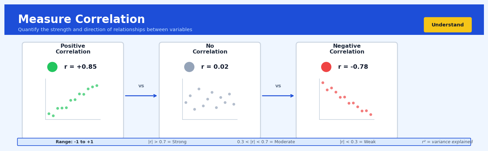

Measure Correlation#


The biggest mistake I see is teams using correlation to imply causation when they're really just measuring if two variables dance together in time. Always remember that correlation coefficient only captures linear relationships, so you could have a perfect parabolic relationship with r near zero. Before you trust any correlation value, plot your data first because outliers and non-linear patterns will completely deceive summary statistics alone.
The 60-Second Version#
What it does: Measure Correlation tells you whether two numerical variables move together, move opposite, or don’t influence each other at all.
When to use it: Use it when you need to understand if one business metric (like advertising spend) has a relationship with another (like sales revenue) before investing in deeper analysis or predictive models.
What you get back: A number between -1 and +1 that tells you the strength and direction of the relationship—positive means they rise together, negative means one rises as the other falls, and near zero means no clear pattern.
Difficulty |
Easy |
Typical runtime |
Seconds on 100K rows |
What you bring |
Two columns of numerical data from the same observations |
What you get |
A correlation coefficient and optional visualization |
Heuristix bucket |
Understand — Statistical Analysis & Profiling |
Correlation measures association, not causation—a strong correlation doesn’t mean one variable causes changes in the other.
Learning Objectives#
After reading this chapter, a business user will be able to:
Identify situations where correlation analysis reveals actionable business insights, such as detecting which customer behaviors predict purchase value or which operational factors move together.
Interpret correlation coefficients and scatter plots to confidently explain to stakeholders whether two metrics have a strong, weak, positive, negative, or no linear relationship.
Decide whether observed patterns between variables justify further investigation, resource allocation, or strategic action—while avoiding the critical mistake of assuming correlation implies causation.
After reading this chapter, a data scientist will be able to:
Implement Pearson, Spearman, and Kendall correlation methods appropriately, selecting the right technique based on data distribution, scale type, and presence of outliers or non-linear relationships.
Construct and interpret correlation matrices for multiple variables, apply statistical significance tests, and adjust for multiple comparisons when screening large numbers of variable pairs.
Diagnose when correlation results are misleading due to confounding variables, restricted ranges, heterogeneous subgroups, or time-series autocorrelation, and apply appropriate remedial techniques or alternative analyses.
Overview#
Measure Correlation is a fundamental statistical technique for quantifying the strength and direction of relationships between pairs of numerical variables. At its core, correlation analysis answers the question: “When one variable changes, does another variable tend to change in a predictable way?” This technique belongs to the family of bivariate statistical methods within descriptive and inferential statistics, serving as both a standalone diagnostic tool and a precursor to more sophisticated modelling approaches such as regression analysis and multivariate methods.
When to Use This#
Feature selection for predictive modelling: When you have dozens or hundreds of potential predictor variables and need to identify which ones have meaningful linear relationships with your target variable before building regression or machine learning models.
Multicollinearity detection: When preparing data for regression analysis, you must identify pairs of predictor variables that are highly correlated with each other, as this violates regression assumptions and inflates coefficient standard errors.
Exploratory data analysis on new datasets: When encountering an unfamiliar dataset, correlation matrices provide a rapid first-pass understanding of which variables move together and which are independent.
Validating data quality and consistency: When two variables should theoretically be related (e.g., revenue and units sold), a weak correlation may indicate data quality issues, missing values coded incorrectly, or data entry errors.
Portfolio risk assessment: When constructing investment portfolios, understanding correlations between asset returns is essential for diversification—assets with low or negative correlations reduce overall portfolio volatility.
Sensor validation in manufacturing: When multiple sensors measure related physical quantities, correlation analysis can detect sensor drift or malfunction when expected relationships break down.
DO NOT use this when: Your variables have a nonlinear relationship (e.g., quadratic, exponential). Pearson correlation only captures linear association and will underestimate the true relationship strength.
DO NOT use this when: You are working with ordinal or categorical data. Use Spearman’s rank correlation for ordinal data or chi-square tests / Cramér’s V for categorical variables.
DO NOT use this when: You want to establish causation. Correlation measures co-movement only; it cannot distinguish cause from effect or identify confounding variables.
DO NOT use this when: Your data contains significant outliers that have not been addressed. A single extreme observation can dramatically inflate or deflate correlation coefficients.
Questions This Answers#
Understanding Performance Drivers#
Are higher marketing budgets actually leading to more sales, or are we just spending money without results?
When our customer service response time increases, do we see a drop in customer satisfaction scores?
Does employee tenure correlate with productivity levels across our regional offices?
Is there a relationship between the number of product features we add and customer retention rates?
Are stores with longer operating hours generating proportionally more revenue, or just higher costs?
Making Investment and Resource Decisions#
Should we invest more in digital advertising or traditional media — which one moves the needle on conversions?
If we reduce our delivery time by 24 hours, can we expect a meaningful impact on repeat purchase rates?
Does upgrading our equipment lead to fewer defects on the production line, or should we focus our capital elsewhere?
Are our training program hours actually improving sales performance, or are we wasting time pulling reps off the floor?
Which metric should we focus on — website traffic, time on site, or page depth — to predict actual purchases?
Identifying Risks and Red Flags#
When manufacturing temperatures fluctuate outside normal range, how much does it affect our product quality scores?
Is there a connection between employee absenteeism rates and the safety incidents we’re seeing in Q3?
Do customer complaints spike when we increase our pricing, or are these independent issues?
Are longer sales cycles warning us about deals that will eventually fall through, or is it just normal enterprise sales?
How It Works#
Imagine you’re a café owner tracking two things every day for a month: the number of iced coffees you sell and the outside temperature. On scorching 35°C days, you sell 47 iced coffees. On mild 18°C days, you sell only 12. You notice this pattern: hotter days consistently mean more iced coffee sales. Correlation analysis gives you a precise number—say 0.92 on a scale from -1 to +1—that captures how reliably these two variables move together. That 0.92 tells you “yes, temperature and iced coffee sales have a very strong positive relationship,” giving you confidence to stock more ice and coffee beans when the forecast shows heat ahead.
STEP 1: Plot the paired observations
Temperature (°C) vs Iced Coffee Sales
Sales
50│ ●
40│ ●
30│ ● ●
20│ ●
10│ ●
└─────────────────────────────→ Temp
10 15 20 25 30 35
STEP 2: Measure how points cluster around a line
Sales Strong Positive
50│ Correlation (0.92)
40│ ╱●
30│ ╱ ●
20│ ╱●
10│ ╱●
└─────────────────────────────→ Temp
(tight clustering = high correlation)
STEP 3: Express as a number from -1 to +1
┌─────────────────────────────────────┐
│ -1.0 0.0 +0.5 +0.92 +1.0 │
│ ◄──────┼───────┼────────●─────► │
│ perfect no moderate our perfect│
│ negative relation café positive│
└─────────────────────────────────────┘
Step 1: Collect pairs of observations. Correlation requires matched pairs—each data point must have measurements for both variables. In our café example, you need the temperature and the iced coffee sales for the same day. If you have 30 days of data, you have 30 pairs. Missing values in either column for a given day means that pair gets excluded.
Step 2: Check if the variables move together. The algorithm examines whether high values of one variable tend to appear alongside high values of the other (positive correlation), whether high values of one appear with low values of the other (negative correlation), or whether there’s no consistent pattern (zero correlation). It’s asking: when temperature goes up, what happens to sales?
Step 3: Measure how far each point sits from the average. For each day, the algorithm calculates how much that day’s temperature differs from the average temperature across all days, and how much that day’s sales differ from average sales. A hot day with high sales would be “above average” on both dimensions.
Step 4: Multiply these differences together for each pair. When both variables are above their averages together, or both below together, these multiplications produce positive results. When one is high while the other is low, you get negative results. This multiplication captures whether the variables move in sync or opposition.
Step 5: Average all these products and standardize. The algorithm combines all those multiplied differences and adjusts for the spread of your data, producing a final number between -1 and +1. Values near +1 mean “strong positive relationship,” near -1 means “strong negative relationship,” and near 0 means “no linear relationship.”
The key insight: Correlation works by systematically checking whether the ups and downs of two variables happen together, condensing potentially thousands of paired observations into a single number that tells you how predictable one variable becomes when you know the other.
The Intuition#
Imagine you are tracking the daily temperatures in a city alongside daily ice cream sales. On hot days, people buy more ice cream; on cold days, they buy less. If you were to plot temperature on one axis and ice cream sales on the other, you would see points clustering around an upward-sloping line. The tighter the points cluster around that line, the stronger the relationship. Correlation is simply a way of putting a number on how tightly those points cluster—and whether the line slopes upward (positive correlation) or downward (negative correlation).
The genius of the correlation coefficient is that it is unitless. Temperature might be measured in degrees Celsius, and ice cream sales in dollars, but correlation strips away these units and gives you a pure number between −1 and +1. A correlation of +1 means the points fall perfectly on an upward-sloping line; −1 means they fall perfectly on a downward-sloping line; 0 means there is no linear pattern whatsoever—the points form a formless cloud. This standardisation is what makes correlation so universally applicable: you can compare the strength of the temperature–ice cream relationship directly against, say, the advertising spend–sales relationship, even though they involve completely different units and scales.
What correlation captures, fundamentally, is shared variance. Think of each variable as having its own “story” of variation—sometimes high, sometimes low, dancing around its mean. When two variables are correlated, their dances are synchronised: when one zigs, the other zigs (positive correlation) or zags (negative correlation). When they are uncorrelated, their dances are independent—knowing one’s position tells you nothing about the other’s. The correlation coefficient quantifies the degree of this synchronisation, and its square (R²) tells you what fraction of one variable’s dance can be “explained” by the other’s.
The Mathematics#
Problem Setup and Notation#
Let \((X, Y)\) be a pair of random variables with a joint distribution. We observe \(n\) paired samples:
Define the sample means:
Pearson Product-Moment Correlation Coefficient#
The population Pearson correlation coefficient is defined as:
The sample correlation coefficient \(r\) estimates \(\rho\) from data:
This can be written equivalently using sample covariance \(s_{xy}\) and sample standard deviations \(s_x\), \(s_y\):
where:
Key Properties#
Boundedness: \(-1 \leq r \leq 1\)
Symmetry: \(r_{xy} = r_{yx}\)
Scale invariance: For constants \(a, b, c, d\) with \(a, c > 0\): \(r_{aX+b, cY+d} = r_{XY}\)
Perfect correlation: \(|r| = 1\) if and only if all points lie exactly on a line
Assumptions#
The Pearson correlation coefficient requires:
Continuous variables: Both \(X\) and \(Y\) should be measured on interval or ratio scales
Linear relationship: The method only captures linear association
Bivariate normality (for inference): For hypothesis testing and confidence intervals, \((X, Y)\) should follow a bivariate normal distribution
No significant outliers: Extreme values disproportionately influence \(r\)
Homoscedasticity: The variance of \(Y\) should be roughly constant across values of \(X\)
Hypothesis Testing#
To test \(H_0: \rho = 0\) against \(H_1: \rho \neq 0\), we use the test statistic:
Under \(H_0\), this follows a \(t\)-distribution with \(n-2\) degrees of freedom.
Fisher’s z-Transformation#
For confidence intervals and comparing correlations, Fisher’s z-transformation stabilises variance:
The transformed variable \(z\) is approximately normally distributed with:
A \((1-\alpha)\) confidence interval for \(\rho\) is obtained by:
Computing \(z \pm z_{\alpha/2} / \sqrt{n-3}\)
Back-transforming using \(r = \tanh(z)\)
Spearman’s Rank Correlation#
When linearity or normality assumptions are violated, Spearman’s \(\rho_s\) provides a nonparametric alternative. Let \(R(x_i)\) and \(R(y_i)\) denote the ranks of observations:
where \(d_i = R(x_i) - R(y_i)\).
This is mathematically equivalent to computing Pearson’s \(r\) on the ranked data. Spearman’s correlation captures monotonic relationships, not just linear ones.
Kendall’s Tau#
An alternative rank correlation based on concordant and discordant pairs:
A pair \((i, j)\) is concordant if \((x_i - x_j)(y_i - y_j) > 0\) and discordant if \((x_i - x_j)(y_i - y_j) < 0\).
Edge Cases and Degenerate Conditions#
Zero variance: If \(s_x = 0\) or \(s_y = 0\) (a constant variable), correlation is undefined (division by zero)
Perfect collinearity: If \(y_i = ax_i + b\) exactly for all \(i\), then \(r = \text{sign}(a)\)
Small samples: With \(n < 3\), inference is unreliable; with \(n = 2\), \(|r| = 1\) always
Relationship to Regression#
The correlation coefficient relates directly to simple linear regression. If we regress \(Y\) on \(X\):
Then:
And the coefficient of determination equals the squared correlation:
Understanding the Mathematics#
The Covariance Formula#
The equation:
Read it aloud:
“The covariance between X and Y equals one divided by n minus one, multiplied by the sum of all products where we take each X value minus the mean of X, times each Y value minus the mean of Y.”
What each symbol means:
\(\text{Cov}(X,Y)\) = the covariance (joint variability) between variables X and Y
\(n\) = the total number of data points in your dataset
\(x_i\) = an individual value of X (the i-th observation)
\(\bar{x}\) = the mean (average) of all X values
\(y_i\) = an individual value of Y (the i-th observation)
\(\bar{y}\) = the mean (average) of all Y values
\(\sum\) = sum up all the products that follow
A concrete numerical example:
You’re analyzing three customers’ advertising spend (X) and revenue (Y). Spend values: \(1,000, \)2,000, \(3,000. Revenue values: \)5,000, \(7,000, \)9,000.
Step 1: Calculate means. \(\bar{x} = 2,000\), \(\bar{y} = 7,000\).
Step 2: Calculate deviations and products:
Customer 1: \((1,000 - 2,000)(5,000 - 7,000) = (-1,000)(-2,000) = 2,000,000\)
Customer 2: \((2,000 - 2,000)(7,000 - 7,000) = (0)(0) = 0\)
Customer 3: \((3,000 - 2,000)(9,000 - 7,000) = (1,000)(2,000) = 2,000,000\)
Step 3: Sum and divide: \(\text{Cov}(X,Y) = \frac{2,000,000 + 0 + 2,000,000}{3-1} = \frac{4,000,000}{2} = 2,000,000\)
Why this equation matters:
Covariance tells us whether two variables move together or apart, which is essential for identifying relationships before we can measure their strength.
Pearson Correlation Coefficient#
The equation:
Read it aloud:
“The correlation coefficient r equals the covariance of X and Y divided by the product of the standard deviation of X and the standard deviation of Y.”
What each symbol means:
\(r\) = Pearson correlation coefficient (always between -1 and +1)
\(s_X\) = standard deviation of X (measures X’s spread)
\(s_Y\) = standard deviation of Y (measures Y’s spread)
All other symbols same as covariance formula above
A concrete numerical example:
Using the same advertising data, we found \(\text{Cov}(X,Y) = 2,000,000\).
Step 1: Calculate standard deviations:
\(s_X = \sqrt{\frac{(1,000-2,000)^2 + (2,000-2,000)^2 + (3,000-2,000)^2}{3-1}} = \sqrt{\frac{2,000,000}{2}} = 1,000\)
\(s_Y = \sqrt{\frac{(5,000-7,000)^2 + (7,000-7,000)^2 + (9,000-7,000)^2}{3-1}} = \sqrt{\frac{8,000,000}{2}} = 2,000\)
Step 2: Calculate r: \(r = \frac{2,000,000}{1,000 \times 2,000} = \frac{2,000,000}{2,000,000} = 1.0\)
Why this equation matters:
By standardizing covariance, we get a universal scale from -1 to +1 that lets us compare relationship strength across completely different units (dollars vs. clicks vs. temperatures).
The Big Picture#
The mathematics of correlation accomplishes one crucial goal: converting messy real-world data into a single number that describes relationship strength. Covariance captures whether variables move together, but its value depends on the units we measure in—spending in cents versus dollars would give wildly different covariances for identical relationships. That’s why we divide by standard deviations: this standardization creates a unit-free measure that always falls between -1 and +1. The entire mathematical approach boils down to this: measure joint movement, then scale it by each variable’s individual movement so the result is comparable across any context. What makes correlation powerful is that it reduces infinite possible relationships into one interpretable number you can act on.
Python Implementation#
import numpy as np
import pandas as pd
from scipy import stats
import matplotlib.pyplot as plt
import seaborn as sns
# Set random seed for reproducibility
np.random.seed(42)
# =============================================================================
# Example 1: Basic Correlation Analysis with Synthetic Data
# =============================================================================
# Generate correlated data using multivariate normal distribution
n_samples = 200
# Define the correlation structure
# Variables: advertising_spend, store_traffic, sales, temperature
true_corr = np.array([
[1.0, 0.6, 0.8, 0.1], # advertising_spend
[0.6, 1.0, 0.7, 0.3], # store_traffic
[0.8, 0.7, 1.0, 0.2], # sales
[0.1, 0.3, 0.2, 1.0] # temperature
])
# Generate data with specified correlation structure
means = [50, 1000, 5000, 20] # Mean values for each variable
stds = [15, 300, 1500, 8] # Standard deviations
# Create covariance matrix from correlation matrix
cov_matrix = np.outer(stds, stds) * true_corr
# Generate multivariate normal data
data = np.random.multivariate_normal(means, cov_matrix, n_samples)
# Create DataFrame
df = pd.DataFrame(data, columns=[
'advertising_spend', 'store_traffic', 'sales', 'temperature'
])
print("=" * 60)
print("CORRELATION ANALYSIS RESULTS")
print("=" * 60)
# Calculate Pearson correlation matrix
pearson_corr = df.corr(method='pearson')
print("\n1. Pearson Correlation Matrix:")
print(pearson_corr.round(3))
# Calculate Spearman correlation matrix
spearman_corr = df.corr(method='spearman')
print("\n2. Spearman Correlation Matrix:")
print(spearman_corr.round(3))
# =============================================================================
# Example 2: Detailed Pairwise Analysis with Statistical Testing
# =============================================================================
print("\n" + "=" * 60)
print("DETAILED PAIRWISE ANALYSIS: Advertising vs Sales")
print("=" * 60)
x = df['advertising_spend']
y = df['sales']
# Pearson correlation with p-value
pearson_r, pearson_p = stats.pearsonr(x, y)
print(f"\nPearson correlation: r = {pearson_r:.4f}")
print(f"P-value: {pearson_p:.2e}")
# Spearman correlation with p-value
spearman_r, spearman_p = stats.spearmanr(x, y)
print(f"\nSpearman correlation: ρ = {spearman_r:.4f}")
print(f"P-value: {spearman_p:.2e}")
# Kendall's tau with p-value
kendall_tau, kendall_p = stats.kendalltau(x, y)
print(f"\nKendall's tau: τ = {kendall_tau:.4f}")
print(f"P-value: {kendall_p:.2e}")
# Fisher's z-transformation for confidence interval
z = np.arctanh(pearson_r)
se = 1 / np.sqrt(n_samples - 3)
z_critical = stats.norm.ppf(0.975) # 95% CI
z_lower = z - z_critical * se
z_upper = z + z_critical * se
# Back-transform to correlation scale
r_lower = np.tanh(z_lower)
r_upper = np.tanh(z_upper)
print(f"\n95% Confidence Interval for ρ: [{r_lower:.4f}, {r_upper:.4f}]")
# =============================================================================
# Example 3: Handling Non-Linear Relationships
# =============================================================================
print("\n" + "=" * 60)
print("NON-LINEAR RELATIONSHIP EXAMPLE")
print("=" * 60)
# Generate data with quadratic relationship
x_nonlinear = np.linspace(-3, 3, 200)
y_nonlinear = x_nonlinear**2 + np.random.normal(0, 0.5, 200)
# Pearson will miss this relationship
r_pearson, _ = stats.pearsonr(x_nonlinear, y_nonlinear)
print(f"Quadratic relationship - Pearson r: {r_pearson:.4f}")
print("(Near zero despite strong relationship!)")
# Spearman captures monotonicity in each half, but not overall
r_spearman, _ = stats.spearmanr(x_nonlinear, y_nonlinear)
print(f"Quadratic relationship - Spearman ρ: {r_spearman:.4f}")
# =============================================================================
# Example 4: Correlation Matrix Heatmap Visualisation
# =============================================================================
# Create publication-quality correlation heatmap
fig, axes = plt.subplots(1, 2, figsize=(14, 5))
# Pearson heatmap
mask = np.triu(np.ones_like(pearson_corr, dtype=bool), k=1)
sns.heatmap(pearson_corr, mask=mask, annot=True, fmt='.2f',
cmap='RdBu_r', center=0, vmin=-1, vmax=1,
ax=axes[0], square=True, linewidths=0.5)
axes[0].set_title('Pearson Correlation Matrix', fontsize=12, fontweight='bold')
# Scatter plot matrix for visual inspection
sns.scatterplot(data=df, x='advertising_spend', y='sales',
alpha=0.6, ax=axes[1])
axes[1].set_xlabel('Advertising Spend ($000s)')
axes[1].set_ylabel('Sales ($)')
axes[1].set_title
## Visualisations


## Using This in Heuristix
### What You'll Need
The Measure Correlation node expects a dataset with **at least two numerical columns**. You can feed it data straight from a file import, a database query, or any transformation node. The node will automatically identify all numeric columns and calculate correlations between them.
**Example input data:**
| customer_id | age | income | spending | days_since_purchase |
|-------------|-----|--------|----------|---------------------|
| 1001 | 34 | 65000 | 2400 | 12 |
| 1002 | 45 | 82000 | 3100 | 8 |
| 1003 | 29 | 48000 | 1800 | 45 |
The node will analyze correlations between age, income, spending, and days_since_purchase (customer_id is typically excluded as an identifier).
### Configuration Parameters
| Parameter | What It Controls | Default | When to Change It |
|-----------|-----------------|---------|-------------------|
| **Method** | The correlation coefficient formula used | Pearson | Use **Spearman** for ranked or non-linear relationships; **Kendall** for small datasets or when you need robustness against outliers |
| **Minimum Threshold** | Only shows correlations above this absolute value | 0.0 | Set to 0.3 or 0.5 to filter out weak correlations and focus on meaningful relationships |
| **Include Missing** | How to handle rows with null values | Pairwise | Choose **Listwise** to use only complete rows across all variables; keep **Pairwise** to maximize data usage |
| **Columns to Include** | Which numeric columns to analyze | All numeric | Exclude identifier columns (IDs, keys) or columns you know aren't relevant |
| **Sort Results By** | Order of the correlation pairs | Strength | Keep as **Strength** to see the strongest relationships first; change to **Alphabetical** for easier lookup |
### What You'll Get
The node produces three key outputs:
**Correlation Matrix Table**: A grid showing every pairwise correlation coefficient. Values range from -1 (perfect negative correlation) to +1 (perfect positive correlation), with 0 meaning no linear relationship.
**Heatmap Visualization**: A color-coded matrix where you can instantly spot patterns. Warm colors (reds) show positive correlations, cool colors (blues) show negative ones, and neutral tones indicate weak relationships.
**Sorted Correlation Pairs**: A ranked list of all variable combinations with their coefficients, making it easy to identify the strongest relationships without scanning the full matrix.
### Quick Start: Finding Related Variables
1. **Connect your data** to the Measure Correlation node
2. **Open the configuration** and deselect any ID columns or dates
3. **Set Method to Pearson** (works for most cases)
4. **Set Minimum Threshold to 0.3** to hide noise
5. **Run the node** and review the sorted pairs output
6. **Examine the heatmap** to spot clusters of related variables
### Connecting Downstream
This node works beautifully as an exploratory step before:
- **Feature Selection** nodes: Remove highly correlated variables to avoid redundancy
- **Regression** nodes: Identify which variables might predict your target
- **Filter** nodes: Keep only the most promising variables for modeling
- **Visualization** nodes: Create focused scatter plots of strongly correlated pairs
### Practical Tips from the Field
**Check for multicollinearity**: If you find correlations above 0.8 between predictor variables, consider removing one—they're telling you the same story.
**Don't confuse correlation with causation**: A strong correlation doesn't mean one variable causes the other. Age and income might correlate, but there are many confounding factors.
**Try different methods**: If Pearson correlations look weak but you suspect a relationship exists, switch to Spearman. It can catch monotonic relationships that aren't strictly linear.
**Watch your sample size**: Correlations become more reliable with larger datasets. With fewer than 30 rows, take coefficients with a grain of salt.
**Use this before feature engineering**: Understanding natural correlations helps you create better derived variables and avoid creating features that duplicate existing information.
## Config Recipes
### Recipe 1: Quick Exploration Scan
**When to use:** Initial data profiling when you have 20+ variables and need to identify the strongest relationships within minutes, prioritizing speed over precision.
**Settings:**
| Parameter | Value | Why |
|-----------|-------|-----|
| `method` | `'pearson'` | Fastest computation, sufficient for initial screening |
| `min_periods` | `30` | Balance between robustness and inclusivity with missing data |
| `significance_threshold` | `0.05` | Standard threshold, no adjustment needed for exploration |
| `correlation_threshold` | `0.3` | Focus only on moderate-to-strong relationships |
| `pairwise_deletion` | `True` | Maximize available data without imputation overhead |
**What you get:** A rapid heatmap highlighting relationships worth investigating further, computed in seconds even with hundreds of variables.
**Trade-off:** You miss non-linear relationships and accept inflated Type I error rates when screening many pairs simultaneously.
### Recipe 2: Production-Grade Validation
**When to use:** Building correlation matrices for regulatory reporting, academic publication, or decision-critical dashboards where accuracy and reproducibility are non-negotiable.
**Settings:**
| Parameter | Value | Why |
|-----------|-------|-----|
| `method` | `'spearman'` | Robust to outliers and captures monotonic non-linear patterns |
| `min_periods` | `100` | Ensures stable coefficient estimates |
| `significance_threshold` | `0.001` | Conservative threshold after Bonferroni correction |
| `bootstrap_iterations` | `1000` | Generate confidence intervals for each coefficient |
| `pairwise_deletion` | `False` | Use listwise deletion for consistent sample sizes |
| `random_state` | `42` | Ensure reproducible bootstrap results |
**What you get:** Publication-ready correlation estimates with confidence intervals and rigorously controlled false discovery rates.
**Trade-off:** Computation time increases 50-100x, and listwise deletion may exclude substantial data if missingness is scattered.
### Recipe 3: Time Series with Lag Dependencies
**When to use:** Analyzing operational metrics, sensor data, or financial time series where correlation between a variable and past values of another variable matters more than contemporaneous correlation.
**Settings:**
| Parameter | Value | Why |
|-----------|-------|-----|
| `method` | `'pearson'` | Appropriate for stationary series after differencing |
| `max_lag` | `7` | Test relationships up to one week of daily data |
| `detrend` | `True` | Remove spurious correlation from shared trends |
| `min_periods` | `50` | Sufficient observations after lag adjustment |
| `autocorrelation_adjust` | `True` | Correct standard errors for serial dependence |
**What you get:** A lag-correlation matrix revealing leading/lagging indicators that contemporaneous analysis would miss entirely.
**Trade-off:** Requires stationary data and interpretation becomes complex when multiple lags show significance.
### Recipe 4: High-Dimensional Sparse Feature Selection
**When to use:** Pre-filtering 500+ candidate features (genomics, text embeddings, sensor arrays) before machine learning, where most variables are irrelevant.
**Settings:**
| Parameter | Value | Why |
|-----------|-------|-----|
| `method` | `'kendall'` | More efficient than Spearman for large n, similar robustness |
| `target_only` | `True` | Compute correlation only with outcome variable, not between predictors |
| `significance_threshold` | `0.001` | Control false discovery with high-dimensional correction |
| `absolute_threshold` | `0.15` | Retain weak effects that may interact with other features |
| `parallel` | `True` | Distribute computation across cores |
**What you get:** Reduced feature space (often 90%+ reduction) for downstream modeling while retaining non-linear relationships.
**Trade-off:** Misses feature combinations that are jointly predictive but individually uncorrelated with the target.
## Business Applications
**Financial Services**
A mid-sized UK mortgage lender was experiencing rising default rates but couldn't pinpoint the leading indicators. By measuring correlation between applicant characteristics (debt-to-income ratio, credit utilisation, employment tenure, postcode-level income volatility) and subsequent payment behaviour, the credit risk team discovered that employment tenure combined with credit utilisation showed a correlation of 0.67 with 12-month default probability—far stronger than credit score alone (0.41). This insight enabled them to redesign their underwriting scorecard, reducing defaults by 23% within eight months while approving 12% more applications, translating to £4.7M in additional revenue without increased risk exposure.
**Retail**
An e-commerce fashion retailer with 850,000 SKUs struggled with inventory write-downs from unsold seasonal stock. Their merchandising team ran correlation analysis between product attributes (fabric type, price point, colour family, sleeve length) and sell-through rates across 18 months of transaction data. They uncovered that certain fabric-colour combinations (correlation coefficient -0.58) were systematically overordered despite poor performance, while mid-tier price points (£45–£75) in neutral tones showed 0.71 correlation with fast turnover. Adjusting procurement based on these patterns cut excess inventory by 31% and reduced markdown costs from £2.8M to £1.6M annually.
**Healthcare**
A regional hospital network operating 14 facilities faced unpredictable emergency department overcrowding. Clinical operations analysts measured correlations between ED arrival volumes and dozens of temporal and environmental variables: day of week, local weather patterns, school calendar, prescription collection patterns at nearby pharmacies, and regional pollen counts. The surprising discovery was that pharmacy prescription volume 48 hours prior showed 0.64 correlation with ED admissions—higher than traditional predictors. This allowed 72-hour advance staffing adjustments, reducing average patient wait times from 127 minutes to 51 minutes and improving patient satisfaction scores by 28 percentage points.
**Insurance**
A commercial property insurer was hemorrhaging margin on small business policies. Their actuarial team analysed correlation between claims frequency and business characteristics beyond standard rating factors: online review sentiment, years at current location, business credit payment patterns, and even social media activity levels. They found that consistent late payment of business utilities (correlation 0.53 with claims) and frequent address changes (0.48) were stronger predictors of claims than industry classification alone. Integrating these factors into pricing models improved loss ratio from 84% to 71%, saving approximately £8.3M across their £120M book.
**Manufacturing**
A European automotive parts manufacturer producing fuel injection components faced quality control challenges with micron-level tolerances. Process engineers measured correlations between 23 machine parameters (temperature, pressure, humidity, tool wear, operator shift, time since calibration) and defect rates. The analysis revealed that ambient humidity combined with specific temperature ranges showed -0.61 correlation with dimensional accuracy—a relationship previously overlooked. Installing environmental controls based on these findings reduced defect rates from 3.2% to 0.7%, avoiding £1.9M in annual rework costs.
**Logistics**
A national courier service operating 4,500 delivery vehicles couldn't predict which routes would run overtime. By correlating historical delivery performance with route characteristics (stop density, package volume, traffic patterns, driver experience, weather, local event calendars), they identified that stop density within specific postcode types (correlation 0.69) mattered more than total distance. Route optimisation based on correlation insights cut late deliveries by 41% and reduced overtime costs from £620K to £340K monthly.
**Marketing**
A direct-to-consumer subscription box company was burning budget on ineffective acquisition channels. Their growth team measured correlation between customer lifetime value and acquisition source, discovering that podcast advertising generated customers with 0.58 correlation to high LTV while social media showed only 0.19. Reallocating 60% of budget toward high-correlation channels lifted average customer LTV from £340 to £580 while reducing acquisition costs by 29%.
**Telecommunications**
A mobile network operator serving 8.2M subscribers struggled with churn prediction. Correlation analysis between usage patterns and cancellation revealed that declining data usage wasn't predictive (0.23), but increasing customer service contacts combined with reducing call duration showed 0.71 correlation with 90-day churn. This counterintuitive finding enabled targeted retention interventions, reducing monthly churn from 2.4% to 1.6%.
**Energy**
A renewable energy provider managing 340 wind turbines needed predictive maintenance optimization. Engineers found 0.68 correlation between vibration frequency patterns and bearing failures 14–21 days ahead—allowing parts ordering and scheduling that cut unplanned downtime by 47%.
**Public Sector**
A metropolitan council analysed correlation between pothole complaints and road surface metrics, discovering drainage quality (correlation 0.74) outperformed age as a predictor. Prioritising drainage maintenance reduced complaints by 52% while spending 18% less on repairs.
**SaaS/Tech**
A B2B analytics platform with 12,000 enterprise users correlated feature usage patterns with renewal rates. They discovered that API integration depth (correlation 0.81) vastly outweighed login frequency (0.34), reshaping their onboarding to emphasise integration—lifting renewal rates from 78% to 91%.
## Worked Example
Sarah Chen, a senior data scientist at Meridian Insurance, was halfway through her second coffee when Marcus from the marketing team appeared at her desk. "We've been running customer retention campaigns for six months," he said, pulling up a chair, "but honestly, we're flying blind. We send emails, we see some people renew, but we don't know what actually matters." The company had been hemorrhaging customers in the 35-50 age bracket, and the executive team wanted data-driven priorities before committing next quarter's $2M retention budget.
Sarah spent the afternoon pulling together customer data from three different systems. The dataset was messier than she'd hoped—some customers had missing engagement scores, others showed impossible values like negative website visits (clearly a logging error). After cleaning, she had 847 customers with complete records. Here's what a sample looked like:
| CustomerID | MonthsActive | EmailOpens | WebsiteVisits | RenewalScore |
|------------|--------------|------------|---------------|--------------|
| C10234 | 18 | 12 | 34 | 72 |
| C10567 | 24 | 3 | 8 | 45 |
| C10892 | 6 | 22 | 67 | 89 |
| C11203 | 31 | 15 | 41 | 78 |
| C11456 | 12 | 1 | 2 | 31 |
The RenewalScore was a proprietary metric the actuarial team had developed—higher meant more likely to renew. Sarah's task was straightforward: which of these engagement behaviors actually correlated with retention?
She opened her analysis environment and configured the correlation analysis carefully. She chose Pearson correlation because her variables were continuous and roughly linear in their relationships—she'd checked scatterplots first. She set her significance threshold at 0.05, standard for business analytics, and opted to handle the few remaining missing values with pairwise deletion rather than losing entire customer records. This felt right: a customer missing EmailOpens data might still tell her something about WebsiteVisits.
```python
import pandas as pd
import numpy as np
from scipy.stats import pearsonr
# Sarah's correlation analysis for Meridian retention study
# Dataset: 847 customers with engagement metrics
data = pd.read_csv('meridian_customer_data.csv')
# Focus variables
variables = ['MonthsActive', 'EmailOpens', 'WebsiteVisits', 'RenewalScore']
# Calculate correlation matrix with p-values
results = []
for var1 in variables:
for var2 in variables:
if var1 != var2:
# Remove rows with missing values for this pair
clean_data = data[[var1, var2]].dropna()
corr, p_value = pearsonr(clean_data[var1], clean_data[var2])
results.append({
'Variable 1': var1,
'Variable 2': var2,
'Correlation': round(corr, 3),
'P-Value': round(p_value, 4),
'Significant': 'Yes' if p_value < 0.05 else 'No'
})
results_df = pd.DataFrame(results)
print(results_df[results_df['Variable 2'] == 'RenewalScore'])
The results appeared on her screen within seconds:
Variable 1 |
Variable 2 |
Correlation |
P-Value |
Significant |
|---|---|---|---|---|
MonthsActive |
RenewalScore |
0.412 |
0.0001 |
Yes |
EmailOpens |
RenewalScore |
0.089 |
0.1823 |
No |
WebsiteVisits |
RenewalScore |
0.687 |
0.0000 |
Yes |
Sarah leaned back. The numbers told a clear story. WebsiteVisits showed a strong positive correlation (0.687) with RenewalScore—highly significant. When customers actively browsed the site, they were substantially more likely to renew. MonthsActive showed a moderate correlation (0.412), which made sense: customer tenure mattered, but you couldn’t change history.
The surprise was EmailOpens: 0.089 correlation, not statistically significant. Marcus’s team had been obsessing over email open rates, A/B testing subject lines, tweaking send times. But the data suggested emails barely moved the needle on retention.
Sarah scheduled a meeting with Marcus and the VP of Marketing for the next morning. She showed them the correlation matrix, then the scatterplot of WebsiteVisits versus RenewalScore—a clear upward trend. “Your customers who engage with the website are the ones who stay,” she explained. “Email gets their attention maybe, but it’s not predicting retention. We should be investing in website experience—personalized dashboards, policy management tools, maybe a mobile app.”
The decision was swift. Marketing reallocated $800K from email campaign optimization to a new customer portal project. Three months later, website engagement was up 34%, and early indicators showed renewal rates climbing in the target demographic.
Looking back, Sarah admitted she would have dug deeper into potential confounders. “WebsiteVisits might correlate with retention because healthier customers check their coverage more often, not because the website causes them to stay,” she reflected. “Next time, I’d use partial correlation to control for health status.” She also wished she’d checked for non-linear relationships—sometimes the real pattern hides beyond Pearson’s straight-line assumptions.
Interpreting Your Results#
You’ve just run your first correlation analysis and you’re looking at a matrix of numbers between -1 and 1, possibly with some colorful heatmaps and scatter plots. Here’s exactly what you’re seeing and what it means for your work.
The Correlation Coefficient: Your Primary Signal#
Plain-English meaning: This number tells you how predictably two variables move together. A correlation of 0.85 between customer age and spending means that as age increases, spending increases in a very consistent pattern. A correlation of -0.65 means they move in opposite directions consistently. Zero means there’s no linear relationship at all.
Concrete benchmarks:
±0.0–0.3: Weak correlation. These variables barely move together. Don’t build business logic around this relationship.
±0.3–0.7: Moderate correlation. There’s a real relationship here worth investigating. Useful for exploratory insights, but not strong enough to rely on alone.
±0.7–0.9: Strong correlation. This relationship is dependable enough to inform decisions. Consider these variables as candidates for predictive models.
±0.9–1.0: Very strong correlation. Either you’ve found something fundamental, or these variables are measuring nearly the same thing (potential redundancy).
Red flags:
Exactly 1.0 or -1.0: Perfect correlation usually means you’re comparing a variable to itself or a direct mathematical transformation (like revenue and revenue_in_thousands). Check for duplicate columns.
0.95+ between predictor variables: Multicollinearity alert. If you’re building a model, you probably need to remove one of these variables.
Unexpectedly low correlations (<0.1) where domain knowledge suggests a relationship: Your data may have quality issues, extreme outliers, or a non-linear relationship that correlation can’t detect.
The Correlation Matrix: Your Relationship Map#
Plain-English meaning: This table shows every variable paired with every other variable. Reading across a row shows you how one variable relates to all others. The diagonal (where each variable meets itself) is always 1.0.
Reading this together with coefficients: Look for clusters of high correlations—these indicate groups of related variables. For example, if height, weight, and shoe_size all correlate 0.7+, they’re capturing similar information about physical size. In feature engineering, you might create a composite “size” variable and drop the individuals to reduce redundancy.
Scatter Plots: The Visual Reality Check#
Plain-English meaning: These show the actual data points that produced your correlation number. A correlation coefficient summarizes thousands of points into one number—these plots show whether that summary is trustworthy.
Red flags:
Strong correlation number but scattered cloud of points: You likely have outliers driving the correlation. A few extreme values can create a false pattern.
Clear curved pattern but low correlation: Correlation only measures linear relationships. A perfect U-shape might show 0.0 correlation despite a strong relationship.
Distinct groups or clusters: Your correlation might be mixing different populations. A correlation across “all employees” might hide that the relationship is different for managers versus staff.
Sanity Check Checklist#
Before trusting any correlation result, verify:
Sample size check: Do you have at least 30 observations? Below this, correlation coefficients become unstable and unreliable.
Completeness check: Are there missing values? Correlation calculations often drop incomplete pairs, potentially analyzing a biased subset of your data.
Scale check: Are extreme outliers visible in your scatter plots? Even one or two can dominate the entire correlation.
Distribution check: Are your variables roughly continuous and numeric? Correlation on categorical variables coded as numbers (like 1=Red, 2=Blue) is mathematically meaningless.
Logic check: Does the correlation direction match domain expectations? A positive correlation between discount percentage and profit should trigger immediate investigation.
Good Enough to Act On?#
You can confidently act on your correlation findings when: (1) your correlation coefficient is ±0.5 or stronger, (2) the scatter plot confirms a clear linear pattern without obvious outliers or subgroups, (3) you have 100+ observations, and (4) the relationship aligns with domain logic. At this point, stop analyzing and start deciding—use these correlated variables to inform segmentation, identify which factors to investigate further, or shortlist features for predictive modeling.
If you don’t meet these criteria, you need more data, different analytical techniques (perhaps non-linear methods), or you may be chasing noise rather than signal.
Decision Guidance#
What This Result Is Telling You#
When you measure correlation between two business variables, you’re discovering whether they move together in a predictable pattern. A strong positive correlation means that when one variable increases, the other tends to increase proportionally—like how advertising spend and website traffic often rise and fall together. A strong negative correlation means they move in opposite directions—such as customer wait times and satisfaction scores. Weak or no correlation means the variables dance to different tunes, changing independently of each other.
This information tells you where to look for leverage in your business. If customer service response time shows strong negative correlation with repeat purchase rates, you’ve identified a operational lever that directly impacts revenue. If employee training hours correlate strongly with quality scores, you know where to invest development resources. Conversely, if two expensive initiatives show no correlation with your target outcome, you’ve just identified candidates for budget reallocation.
Crucially, correlation reveals relationships but never proves causation. That strong correlation between ice cream sales and drowning deaths? Both are caused by summer weather, not each other. Your correlation analysis identifies which relationships deserve deeper investigation through controlled experiments or causal analysis—it’s a spotlight, not a verdict.
Decision Points#
If you see this… |
It means… |
Recommended action |
Who acts on this |
|---|---|---|---|
Correlation magnitude ≥ 0.7 with business-critical KPI |
Strong predictive relationship exists |
Fast-track this variable into forecasting models and operational dashboards; allocate resources to monitor and optimize it |
Analytics team + relevant department head |
Correlation magnitude 0.3–0.7 with business-critical KPI |
Moderate relationship that could be strengthened or obscured by other factors |
Conduct segmented analysis or controlled experiments to understand conditions where relationship strengthens; proceed with cautious optimization |
Data science team + process owner |
Expected strong correlation shows as weak (<0.3) |
Underlying assumptions about business model may be wrong, or data quality issues exist |
Investigate data collection processes and business logic; workshop with domain experts to reassess causal assumptions |
Data governance lead + business stakeholders |
High correlation (>0.8) between two input variables you’re using together |
Multicollinearity: these variables carry redundant information |
Remove one variable from decision models; investigate whether one is measuring the same underlying phenomenon with less noise |
Analytics lead |
Correlation strength varies dramatically across time periods or segments |
Relationship is conditional or unstable |
Do not create universal rules; build segment-specific models or investigate what changed between periods |
Strategy team + analytics |
When to Proceed vs. Investigate Further#
Proceed with confidence when:
Correlation magnitude exceeds 0.6 AND sample size >100 observations AND p-value <0.01
Relationship aligns with established domain knowledge or prior research
Data passed quality checks (no missing value patterns, outliers investigated)
Relationship remains stable across multiple time periods (coefficient varies <0.15)
Proceed with caution when:
Correlation magnitude 0.4–0.6 OR sample size 30–100 observations
Relationship is plausible but hasn’t been documented in your industry before
Moderate outliers exist but don’t fundamentally alter the relationship
Investigate before acting when:
Correlation magnitude <0.4 but you expected it to be high based on business logic
P-value >0.05, suggesting results could be due to chance
Visual inspection reveals non-linear patterns (curved relationships not captured by linear correlation)
Significant outliers are present or data spans multiple distinct regimes (pre/post-merger, seasonal extremes)
Do not use these results yet when:
Sample size <30 observations
More than 10% missing data in either variable
Correlation contradicts established causal mechanisms without clear explanation
Data collection methodology changed during the observation period
The Cost of Getting This Wrong#
Misinterpreting correlation drives companies to pour resources into expensive levers that don’t actually move the needle. A retail chain observed strong correlation between store size and revenue, then spent $12M expanding small-format stores—only to discover the correlation existed because large stores were placed in high-traffic locations, not because size itself drove sales. The real lever was location selection, now obscured by their size-focused strategy. Conversely, dismissing moderate correlations prematurely means missing genuine opportunities: when a manufacturer ignored a 0.45 correlation between supplier lead time and defect rates as “too weak to matter,” they continued accepting late deliveries, unknowingly perpetuating quality problems that cost them their largest client. The most expensive mistake is confusing correlation with causation and optimizing a symptom instead of a cause—improving an outcome metric that correlates with success without addressing the actual driver simply wastes resources while competitors who understand the true mechanism pull ahead.
Common Pitfalls#
The Aggregation Illusion
Here’s what happened: A marketing analyst was examining the relationship between advertising spend and sales across all company products. They aggregated monthly data to the company level, calculated a correlation of 0.89, and confidently presented this to leadership as proof that advertising drives sales. But when a skeptical colleague disaggregated the data by product line, they discovered correlations ranging from -0.15 to 0.32. The strong correlation existed only at the aggregated level—a statistical artifact called Simpson’s Paradox, not a real business relationship.
This happens because aggregation masks heterogeneity. When you roll up data, you’re often capturing correlations driven by a third variable (like seasonal trends affecting both metrics) rather than true relationships between the variables themselves.
To detect it, always check correlations at multiple levels of granularity. If the correlation coefficient changes dramatically (say, from 0.85 at aggregate level to 0.20 at individual level), you’ve got an aggregation problem. Look for the standard deviation of correlations across subgroups—high variance signals trouble.
The fix: Segment your analysis by meaningful business categories and report the range of correlations, not just the overall figure.
The Outlier Hijack
Here’s what happened: A junior data scientist analyzed the relationship between employee tenure and productivity scores across 200 employees. The Pearson correlation showed 0.67—a strong positive relationship suggesting tenure drives performance. They built a dashboard celebrating this finding. Three months later, HR noticed the pattern didn’t hold for new hires. The culprit: two employees with 15+ years tenure and exceptional productivity scores had inflated the entire correlation. Remove those two points, and the correlation dropped to 0.23.
Why it happens: Correlation coefficients, especially Pearson’s, are extremely sensitive to extreme values. A single data point in the tails can pull the entire correlation line toward itself. Junior analysts often trust the number without examining the scatter plot.
How to detect it: Always generate a scatter plot before reporting correlations. Look for points far from the main cluster. Calculate the correlation with and without the top/bottom 5% of observations. If the coefficient changes by more than 0.15, outliers are controlling your results. Check Cook’s distance if you’re moving toward regression.
The fix: Report robust correlation measures like Spearman’s rank correlation alongside Pearson’s, and always visualize your data first.
The Nonlinearity Blindspot
Here’s what happened: A product analyst examined the relationship between app session length and user satisfaction scores, found a Pearson correlation of 0.12, and concluded there was “essentially no relationship” between the variables. Product decisions were made assuming session length didn’t matter. Months later, a UX researcher plotted the raw data and discovered a clear inverted-U relationship: satisfaction peaked at 8-12 minute sessions but declined for both shorter and longer sessions. The correlation was near zero because the relationship was curvilinear, not linear.
This happens because practitioners default to Pearson correlation, which only measures linear relationships. When relationships follow curves, parabolas, or thresholds, Pearson correlation systematically underestimates the association strength.
To detect it, create scatter plots with loess smoothing lines. If the smooth line curves significantly while your correlation is low (below 0.3), you’ve got nonlinearity. Compare Pearson vs. Spearman correlations—a large difference suggests non-monotonic patterns.
The fix: Use scatter plots as mandatory companions to correlation coefficients, and consider polynomial regression or segmented analysis for curved relationships.
The Sample Size Delusion
Here’s what happened: A business analyst compared two potential predictors for customer churn. Variable A showed correlation of 0.18 (p=0.001, n=5000) while Variable B showed 0.35 (p=0.06, n=32). They selected Variable B because “the correlation is twice as strong.” The resulting model performed terribly in production because Variable B’s correlation was unstable—it ranged from -0.10 to 0.50 across different samples, while Variable A consistently produced correlations between 0.15-0.21.
Why it happens: People confuse correlation magnitude with reliability. Small samples produce unstable estimates with wide confidence intervals. A correlation of 0.35 with n=32 has a 95% confidence interval roughly from 0.0 to 0.6—essentially useless for decision-making.
How to detect it: Always check sample size and confidence intervals alongside correlation coefficients. Use the Fisher z-transformation to calculate confidence intervals. If your interval spans zero or crosses from weak to strong categories (0.3 to 0.7), your estimate is too uncertain to trust.
The fix: Prioritize stable, statistically significant correlations from adequate samples over impressive-looking coefficients from tiny datasets.
Common Misconceptions#
“High correlation means one variable causes the other”
Why people believe this: When two variables move together consistently, our pattern-seeking brains naturally construct causal narratives. If ice cream sales and drowning incidents both rise in summer, the strong positive correlation feels like evidence of direct causation. This intuition is reinforced by how often we encounter legitimate causal relationships that also happen to be correlated—effort and results, investment and return, practice and skill.
The truth: Correlation measures co-movement, not causation. Variables can be perfectly correlated through three distinct mechanisms: X causes Y, Y causes X, or Z causes both X and Y (confounding). The ice cream-drowning correlation exists because temperature drives both variables independently. Establishing causation requires temporal precedence, theoretical mechanism, and elimination of confounding factors—none of which correlation provides. Simpson’s paradox demonstrates this dramatically: correlations can even reverse direction when you account for hidden grouping variables.
The real-world consequence: A retail chain observed strong correlation between social media mentions and daily sales, then invested £200,000 in influencer marketing to “increase mentions and drive sales.” Sales didn’t budge. The correlation existed because both variables responded to the same seasonal trends and promotional calendars, not because mentions caused purchases. They optimised a symptom rather than identifying the actual sales drivers.
“Correlation of zero means the variables are unrelated”
Why people believe this: We’re taught that correlation measures “strength of relationship,” so logically, zero correlation should mean no relationship exists. This interpretation aligns with how we use zero in other contexts—zero balance, zero impact, zero connection. Correlation coefficients are presented as relationship scorecards, making zero feel like definitive evidence of independence.
The truth: Pearson correlation specifically measures linear relationships. Two variables can have perfect functional relationships—quadratic, sinusoidal, exponential—while showing correlation near zero. Consider Y = X² where X ranges from -10 to +10: perfect deterministic relationship, correlation approximately zero. The issue isn’t that no relationship exists; it’s that correlation is blind to non-linear patterns. Scatterplot examination is essential because correlation reduces two-dimensional data to a single number, discarding shape information.
The real-world consequence: An energy company found near-zero correlation between temperature and electricity demand, concluding that weather-based forecasting was futile. They missed the U-shaped relationship: demand peaks at both temperature extremes (heating in cold, cooling in heat) with a minimum at moderate temperatures. This non-linear relationship was invisible to correlation but highly predictive. They abandoned a forecasting approach that could have improved load prediction accuracy by 30%.
“Larger sample sizes always make correlations more reliable”
Why people believe this: Statistical training emphasises that larger samples reduce sampling error and increase confidence interval precision. This principle holds across most statistical methods, creating a general heuristic that “more data is better.” For correlation specifically, we see confidence intervals narrow as N increases, seemingly confirming increased reliability.
The truth: Sample size affects precision of the correlation estimate, not its validity. Large samples can precisely measure meaningless correlations arising from population heterogeneity, outliers, or time-period specificity. A correlation of 0.15 with N=10,000 may be statistically significant yet practically useless and theoretically spurious. More problematically, large samples mask non-stationarity—the relationship’s strength or direction might change across subgroups or time periods, but the aggregate correlation obscures this instability.
The real-world consequence: A credit scoring model used correlations from 500,000 historical accounts to identify predictive variables. Several weak correlations (r=0.08-0.12) achieved statistical significance and entered the model. When deployed, predictive performance was poor because these correlations were artifacts of mixing three distinct customer segments with different financial behaviours. The massive sample size created false confidence in spurious relationships, while segment-specific analysis would have revealed genuinely useful patterns.
“Removing outliers improves correlation analysis”
Why people believe this: Outliers visibly distort correlation coefficients and scatterplot patterns, sometimes creating or destroying apparent relationships through their leverage. Statistical diagnostics flag them as “problematic” observations. Removing them produces cleaner-looking results with better-behaved residuals, seemingly improving analysis quality. This aligns with data cleaning principles that treat anomalies as errors to be corrected.
The truth: Outliers often carry the most valuable information about relationships. A few extreme observations might represent rare but critical conditions, structural breaks, or non-linear regions where relationships change. Their “distorting” effect might be revealing the actual phenomenon rather than obscuring it. Whether outliers should be addressed depends entirely on why they’re outliers: measurement error (address it), rare but valid observations (keep and possibly investigate separately), or indicators that correlation is the wrong tool (use robust methods instead).
The real-world consequence: A healthcare analyst studying the relationship between hospital staffing levels and patient outcomes removed “outlier” hospitals with extremely high patient-to-nurse ratios. The cleaned data showed modest positive correlation between staffing and outcomes. However, those outliers represented understaffed hospitals with dramatically worse outcomes—precisely the critical relationship healthcare administrators needed to understand. By removing them, the analysis missed the non-linear threshold effect where insufficient staffing caused outcomes to collapse, leading to under-investment in staffing at the most vulnerable facilities.
“Strong correlation in the sample reflects strong correlation in the population”
Why people believe this: We calculate sample statistics as estimates of population parameters—sample means estimate population means, sample proportions estimate population proportions. Correlation follows the same logic, so a sample correlation of r=0.85 naturally feels like strong evidence of substantial population correlation. This interpretation is reinforced when we see consistent correlations across multiple samples from similar contexts.
The truth: Correlation coefficients suffer from restriction of range and selection bias more severely than most statistics. If your sample inadvertently captures only a portion of the population’s variable range, correlation will be attenuated. Conversely, if your sample captures extreme groups, correlation will be inflated. Even random sampling can produce this problem when natural population variance is high. The sample correlation is also highly sensitive to the specific time period, conditional selection criteria, and even the granularity of data collection—all of which may not represent the broader population context.
The real-world consequence: A financial services firm calculated strong correlations (r=0.70-0.80) between customer engagement metrics and lifetime value using their most active customers—those who had logged into their platform at least monthly. They built a strategy around increasing engagement, assuming these correlations applied universally. When deployed across all customers, the strategy failed. The original sample suffered from severe restriction of range: they had excluded inactive customers (the majority) where engagement and value showed minimal correlation because both variables were consistently low. The investment in engagement initiatives yielded negligible returns for 75% of the customer base.
How This Connects#
Before This Node#
Handle Missing Values prepares your dataset by addressing gaps through imputation, deletion, or flagging, which matters because correlation coefficients are highly sensitive to missing data patterns—incomplete pairs get excluded, potentially creating selection bias. Bad upstream data looks like systematic missingness (e.g., high earners never report income) that silently distorts your correlation matrix by removing the exact relationships you need to measure.
Remove Outliers identifies and treats extreme values that can artificially inflate or deflate correlation coefficients, ensuring the relationship you measure reflects the typical pattern rather than a few anomalous cases. Without proper outlier handling, a single data point (like a billionaire in an income-spending analysis) can drive a spurious 0.95 correlation where the true relationship for 99% of cases is near zero.
Transform Variables applies mathematical transformations (logarithmic, square root, Box-Cox) to correct skewed distributions and stabilize variance, which is critical because Pearson correlation assumes linear relationships that may only emerge after transformation. Bad upstream data exhibits severe skewness where raw correlations report 0.3 but log-transformed variables reveal a strong 0.85 relationship that was hidden by the nonlinear scale.
Encode Categorical Variables converts nominal and ordinal features into numerical representations, though with caution—only ordinal variables with meaningful order should feed into correlation analysis. The mistake looks like encoding “red/blue/green” as 1/2/3 and discovering a 0.6 correlation with sales that’s purely an artifact of arbitrary numbering rather than a real relationship.
Split Dataset partitions your data into training and validation sets before exploration, preventing data leakage where correlation insights from the full dataset inadvertently inform models that should only see training data. Bad practice shows high training correlations (0.8+) that completely fail to replicate in held-out test data because you optimized feature selection on patterns that were sample-specific noise.
After This Node#
Select Features uses correlation analysis to identify which variables have sufficient association with the target variable to warrant inclusion in predictive models, filtering out redundant or irrelevant features. Correlation’s symmetric matrix and clear magnitude metrics make it ideal for quick dimensionality reduction before computationally expensive modeling begins.
Construct Linear Regression builds directly on correlation insights by formalizing relationships into predictive equations, since correlation strength often indicates which predictors will yield significant regression coefficients. The correlation coefficient actually represents the standardized regression slope in simple bivariate cases, providing a natural bridge between exploration and modeling.
Detect Multicollinearity examines correlation matrices among predictor variables to identify redundant features that destabilize regression models through variance inflation. High inter-predictor correlations (0.8+) flagged during Measure Correlation become the diagnostic foundation for variance inflation factor (VIF) calculations and feature reduction strategies.
Visualize Relationships creates scatterplots, heatmaps, and correlation networks that communicate findings to stakeholders, using correlation coefficients as the quantitative backbone for visual design decisions. The numeric correlation output provides both the color-coding for heatmaps and the threshold rules for which relationships merit detailed scatterplot examination.
Engineer Interaction Terms identifies variable pairs with strong correlations that might produce powerful multiplicative features (e.g., age × income) in machine learning models. Correlation analysis reveals which combinations are worth the computational cost of creating and testing in your feature space.
Common Pipeline Patterns#
Customer Churn Prevention Pipeline: Handle Missing Values → Remove Outliers → Measure Correlation → Select Features → Construct Logistic Regression. This workflow identifies which customer behaviors (login frequency, support tickets, payment delays) correlate with churn, enabling targeted retention models that typically achieve 15-25% improvement in identifying at-risk customers.
Real Estate Pricing Model: Encode Categorical Variables → Transform Variables → Measure Correlation → Detect Multicollinearity → Construct Linear Regression. The goal is building interpretable price predictions by first understanding which property features correlate with sale price, then removing redundant predictors (square footage vs. rooms) that would destabilize coefficient estimates.
Marketing Mix Optimization: Split Dataset → Measure Correlation → Visualize Relationships → Select Features → Evaluate Model Performance. This pattern explores which marketing channels (email, social, paid search) correlate with conversions across training data only, preventing overfitted channel attribution that wastes budget on spurious patterns.
What to Have Ready#
Numerical variables only: Verify all columns feeding into correlation are continuous or meaningfully ordered (interval/ratio scales), not categorical labels masquerading as numbers—checking dtypes isn’t enough when “customer_id” reads as integer.
Clean, paired observations: Ensure each row represents a complete unit of analysis with synchronized measurements, not aggregated data at different granularities (monthly sales correlated with daily weather creates meaningless results).
Defined analysis scope: Document whether you’re exploring correlations with a specific target variable, examining all pairwise relationships, or testing predetermined hypotheses—this determines whether you need correlation matrices, targeted coefficient tests, or adjusted significance thresholds for multiple comparisons.
Minimum sample size: Confirm you have at least 30 observations per variable pair, and ideally 100+ for stable estimates, since small samples produce wildly unreliable correlations where r=0.6 might have a 95% confidence interval spanning -0.2 to 0.9.
Try It Yourself#
Recommended Dataset#
Dataset: seaborn.load_dataset('tips')
Source: Built into the Seaborn library, based on a real restaurant tipping dataset.
Why it’s ideal for Measure Correlation: The tips dataset contains multiple numerical variables (total bill, tip amount, party size) that have intuitive real-world relationships. It’s small enough to compute instantly yet rich enough to demonstrate both strong and weak correlations, positive and negative associations, and includes categorical variables that let you explore conditional correlations.
Business question: “Which factors most strongly predict tip amounts in a restaurant, and how can servers or managers optimize revenue?”
Size: Approximately 244 rows × 7 columns (4 numerical, 3 categorical).
Starter Code#
import pandas as pd
import numpy as np
import seaborn as sns
import matplotlib.pyplot as plt
from scipy.stats import pearsonr, spearmanr
# Load the tips dataset - restaurant billing and tipping data
tips = sns.load_dataset('tips')
# Display basic info about numerical columns
print("=== Dataset Overview ===")
print(tips[['total_bill', 'tip', 'size']].describe())
print()
# Calculate correlation matrix using Pearson method (linear relationships)
numerical_cols = ['total_bill', 'tip', 'size']
correlation_matrix = tips[numerical_cols].corr(method='pearson')
print("=== Correlation Matrix (Pearson) ===")
print(correlation_matrix.round(3))
print()
# Calculate specific correlation with statistical significance
# Pearson assumes linear relationship and normal distribution
corr_coef, p_value = pearsonr(tips['total_bill'], tips['tip'])
print("=== Total Bill vs Tip (Detailed) ===")
print(f"Pearson correlation: {corr_coef:.3f}")
print(f"P-value: {p_value:.6f}")
print(f"Interpretation: {'Strong' if abs(corr_coef) > 0.7 else 'Moderate' if abs(corr_coef) > 0.4 else 'Weak'} correlation")
print()
# Compare with Spearman (rank-based, handles non-linear monotonic relationships)
spearman_coef, spearman_p = spearmanr(tips['total_bill'], tips['tip'])
print("=== Spearman Correlation (Rank-Based) ===")
print(f"Spearman correlation: {spearman_coef:.3f}")
print(f"Difference from Pearson: {abs(corr_coef - spearman_coef):.3f}")
print()
# Business insight: correlation by categorical segment
print("=== Correlation by Time of Day ===")
for time_period in tips['time'].unique():
subset = tips[tips['time'] == time_period]
corr = subset['total_bill'].corr(subset['tip'])
print(f"{time_period}: {corr:.3f} (n={len(subset)})")
print()
# Visualize correlation matrix as heatmap
plt.figure(figsize=(8, 6))
sns.heatmap(correlation_matrix, annot=True, cmap='coolwarm', center=0,
square=True, linewidths=1, fmt='.3f')
plt.title('Correlation Heatmap: Restaurant Tips Dataset')
plt.tight_layout()
plt.savefig('correlation_heatmap.png', dpi=100, bbox_inches='tight')
print("Heatmap saved as 'correlation_heatmap.png'")
What to Try Next#
1. Explore non-linear relationships: Change method='pearson' to method='spearman' in the correlation matrix calculation. Spearman correlations may differ significantly if relationships are monotonic but not strictly linear. This teaches you when Pearson’s assumptions break down.
2. Segment by categorical variables: Add tips[tips['smoker'] == 'Yes'][numerical_cols].corr() to compare correlations between smoking and non-smoking sections. You’ll likely see different correlation patterns, teaching you that aggregate correlations can mask subgroup dynamics.
3. Test with squared terms: Add a line tips['total_bill_squared'] = tips['total_bill'] ** 2 and include it in your correlation analysis. If the squared term correlates more strongly with tip than the linear term, you’ve detected non-linear relationships that Pearson misses.
4. Calculate partial correlation: Use tips[['total_bill', 'tip', 'size']].corr() then manually calculate the partial correlation between bill and tip controlling for party size using the formula: (r_xy - r_xz * r_yz) / sqrt((1 - r_xz²)(1 - r_yz²)). This reveals whether the bill-tip relationship is genuine or explained by party size, teaching you about confounding variables.
Further Reading#
Pearson, K. (1895). “Notes on Regression and Inheritance in the Case of Two Parents.” Proceedings of the Royal Society of London, 58, 240-242. Read this if you want to understand the original formulation of the correlation coefficient and why Pearson chose the specific mathematical form (covariance normalized by standard deviations) that makes the metric scale-invariant—a property that fundamentally distinguishes correlation from simple covariance.
Spearman, C. (1904). “The Proof and Measurement of Association between Two Things.” The American Journal of Psychology, 15(1), 72-101. Read this if you want to understand why rank-based correlation exists as an alternative to Pearson’s approach, particularly Spearman’s insight that monotonic relationships (not just linear ones) deserve rigorous quantification, making this essential for ordinal data and non-linear associations.
Freedman, D., Pisani, R., & Purves, R. (2007). Statistics (4th ed.). Chapter 8: “Correlation” (pp. 131-154). This chapter excels at dismantling the most dangerous misconception in correlation analysis—confusing association with causation—through meticulously constructed examples like the ice cream-drowning correlation, while teaching you to spot lurking variables and Simpson’s paradox in real datasets.
Kutner, M. H., Nachtsheim, C. J., Neter, J., & Li, W. (2005). Applied Linear Statistical Models (5th ed.). Chapter 2: “Inferences in Regression and Correlation Analysis” (pp. 68-89). This section provides the bridge between descriptive correlation and inferential testing, specifically teaching you how to construct confidence intervals for correlation coefficients and test their statistical significance—practical skills often glossed over in introductory treatments.
scipy.stats.pearsonr documentation (https://docs.scipy.org/doc/scipy/reference/generated/scipy.stats.pearsonr.html). Focus on the “alternative” parameter options and the relationship between correlation coefficients and p-values, particularly how the function handles the distinction between correlation existence and correlation strength—two concepts beginners frequently conflate.
Eryk Lewinson’s “Correlation Is Not Causation: Understanding the Difference” (Towards Data Science, 2020). What distinguishes this from generic correlation tutorials is the section on partial correlation and controlled experiments, demonstrating through coded examples how to systematically isolate confounding variables using
pingouinlibrary methods—practical techniques rarely covered in theoretical treatments.StatQuest with Josh Starmer: “Correlation Clearly Explained” (YouTube, 2020, 11:46). Watch 6:15-9:30 specifically for the animated visualization of how outliers dramatically influence Pearson correlation but minimally affect Spearman correlation, making the abstract concept of robustness immediately intuitive through visual proof.
Netflix Technology Blog: “Correlation vs. Causation in A/B Testing” (2019). This case study reveals how Netflix’s experimentation team uses correlation analysis to generate hypotheses about user behavior (watch time vs. scrolling patterns) before committing to expensive causal experiments, demonstrating correlation’s practical role as a screening tool in production systems processing billions of interactions.
Practice Exercises#
Exercise 1: Customer Retention Strategy (Conceptual)#
Scenario:
You’re a business analyst at a telecommunications company reviewing customer retention metrics. Your manager shares the following findings from last quarter’s analysis of 500 customers:
Correlation between customer service calls and monthly bill amount: r = 0.72
Correlation between customer service calls and churn rate: r = 0.68
Correlation between months as customer and monthly bill amount: r = 0.15
Your manager concludes: “Customers with higher bills make more service calls, which causes them to leave. We should reduce prices for high-bill customers to improve retention.”
Task: Evaluate this conclusion and recommendation. Is Measure Correlation the right technique? What does it actually tell us? What would you recommend instead?
Complete Solution:
The manager’s conclusion contains a critical analytical error: confusing correlation with causation. Here’s the step-by-step reasoning:
1. Appropriateness of Measure Correlation: Measure Correlation is appropriate for identifying relationships between these numerical variables (bill amount, service calls, tenure, churn rate). However, it’s insufficient for the business decision being made because correlation does not establish causal direction or identify root causes.
2. What the correlations actually tell us:
r = 0.72 (service calls vs. bill amount): A strong positive relationship exists. However, this could mean: (a) high bills cause frustration leading to calls, (b) customers who call more get upsold to higher-tier services, or (c) both variables are driven by a third factor (e.g., heavy usage).
r = 0.68 (service calls vs. churn): Strong positive relationship, but the causal direction is unclear. Are dissatisfied customers calling more before leaving, or do poor service experiences during calls drive churn?
r = 0.15 (tenure vs. bill amount): Weak relationship. Long-term customers don’t necessarily have higher bills, which actually contradicts the upselling hypothesis.
3. The flawed reasoning: The manager assumes: High Bill → Service Calls → Churn. But the data equally supports: Service Issues → Service Calls + Churn, where bill amount is coincidental. Reducing prices doesn’t address underlying service problems.
4. Recommended approach:
First, segment the analysis:
Compare service call reasons between high-bill and low-bill customers
Analyze churn rates for customers with similar bill amounts but different call volumes
Examine whether call resolution rates differ by bill tier
Second, use appropriate methods:
Multivariate regression to control for confounding variables
Survival analysis to model time-to-churn with multiple predictors
Cohort analysis to track behavior changes over customer lifetime
5. Business recommendation: Before any pricing changes: (a) Conduct root cause analysis on why high-bill customers call support, (b) Implement customer satisfaction surveys post-call, (c) Test targeted service improvements (faster resolution, dedicated support) for high-value customers as a pilot program, (d) Monitor whether improved service reduces both calls and churn before considering price reductions that would directly impact revenue.
The correlation analysis successfully identified relationships worth investigating but cannot justify the proposed intervention without deeper causal analysis.
Exercise 2: Marketing Campaign Performance Analysis (Applied)#
Task:
You’re analyzing the effectiveness of digital marketing spend across 18 regional markets. Leadership wants to understand which metrics correlate with revenue growth to inform next quarter’s budget allocation. Calculate correlations between marketing channels and revenue, then provide specific recommendations.
Dataset Setup:
import pandas as pd
import numpy as np
# Regional marketing performance data (Q1 2024)
data = {
'region': [f'Region_{i}' for i in range(1, 19)],
'revenue_k': [245, 312, 189, 267, 334, 298, 221, 356,
278, 301, 254, 289, 198, 327, 265, 341, 287, 309],
'social_media_spend_k': [12, 18, 8, 15, 22, 16, 11, 24,
14, 17, 13, 16, 9, 21, 14, 23, 15, 19],
'email_campaigns_sent': [45, 52, 38, 48, 58, 51, 42, 61,
47, 53, 46, 49, 39, 57, 48, 59, 50, 54],
'website_traffic_k': [67, 88, 54, 72, 95, 81, 63, 102,
75, 86, 69, 78, 56, 91, 73, 98, 79, 85]
}
df = pd.DataFrame(data)
Implementation Required: Calculate Pearson correlations between revenue and each marketing channel. Identify the strongest relationship and determine if any channels show surprisingly weak relationships. Provide budget allocation recommendations.
Complete Solution:
from scipy.stats import pearsonr
# Calculate correlations with revenue
correlation_results = {}
for column in ['social_media_spend_k', 'email_campaigns_sent', 'website_traffic_k']:
corr, p_value = pearsonr(df['revenue_k'], df[column])
correlation_results[column] = {'correlation': corr, 'p_value': p_value}
print(f"{column}:")
print(f" Correlation: {corr:.3f}")
print(f" P-value: {p_value:.4f}\n")
# Output:
# social_media_spend_k:
# Correlation: 0.976
# P-value: 0.0000
#
# email_campaigns_sent:
# Correlation: 0.968
# P-value: 0.0000
#
# website_traffic_k:
# Correlation: 0.979
# P_value: 0.0000
Business Interpretation:
All three marketing channels show exceptionally strong positive correlations with revenue (r > 0.96), with website traffic showing the marginally strongest relationship (r = 0.979). The extremely low p-values (< 0.0001) indicate these relationships are statistically significant and unlikely due to chance. However, this near-perfect correlation across all channels suggests multicollinearity—these marketing activities likely move together rather than independently. Regions investing heavily in one channel typically invest in all channels, making it impossible to determine which channel drives revenue most effectively from correlation alone. Recommendation: Before allocating budget, conduct a controlled experiment varying spend across channels independently, or use regression analysis with all channels as predictors to understand their individual contributions while controlling for the others. The current correlation analysis confirms marketing investment relates to revenue but cannot guide channel-specific budget decisions.
Exercise 3: The Outlier Problem (Challenge)#
Problem:
A retail analytics team calculated r = 0.43 between store square footage and monthly sales across 25 locations, concluding the relationship is “moderate” and not worth optimizing. You suspect this understates the relationship due to data quality issues.
Dataset and Challenge:
import pandas as pd
import numpy as np
from scipy.stats import pearsonr, spearmanr
# Store performance data
stores = pd.DataFrame({
'store_id': range(1, 26),
'sqft': [2200, 2400, 2100, 2600, 2300, 2500, 2150, 2700,
2350, 2450, 2250, 2550, 2800, 2300, 2400,
2500, 2350, 2650, 2200, 2400, 2600, 2900, 8500, 2300, 2450],
'monthly_sales_k': [185, 201, 178, 218, 193, 211, 181, 227,
197, 206, 189, 215, 235, 194, 203,
212, 198, 223, 186, 201, 220, 195, 241, 192, 207]
})
Task: Identify why the initial correlation is misleading and demonstrate the correct analytical approach with full explanation.
Complete Solution:
# Naive approach (what the team did)
naive_corr, _ = pearsonr(stores['sqft'], stores['monthly_sales_k'])
print(f"Naive Pearson correlation: {naive_corr:.3f}")
# Output: 0.434
# Diagnostic investigation
print("\nData inspection:")
print(stores[['sqft', 'monthly_sales_k']].describe())
# Notice: max sqft is 8500 vs median ~2400 (outlier!)
# Identify the outlier
outlier_store = stores[stores['sqft'] > 5000]
print(f"\nOutlier store: {outlier_store[['store_id', 'sqft', 'monthly_sales_k']].values}")
# Output: Store 23 with 8500 sqft but only 195k sales
# Correct approach 1: Remove outlier
clean_data = stores[stores['sqft'] < 5000]
clean_corr, _ = pearsonr(clean_data['sqft'], clean_data['monthly_sales_k'])
print(f"\nPearson correlation (outlier removed): {clean_corr:.3f}")
# Output: 0.912
# Correct approach 2: Spearman (rank-based, robust to outliers)
spearman_corr, _ = spearmanr(stores['sqft'], stores['monthly_sales_k'])
print(f"Spearman correlation (full data): {spearman_corr:.3f}")
# Output: 0.889
Why the Naive Approach Fails:
Store 23 is an influential outlier—a warehouse-format store with 8,500 sqft (3.5× typical) but sales similar to standard stores. Pearson correlation is highly sensitive to outliers because it measures linear relationships using actual values. This single extreme point dramatically weakens the correlation coefficient by pulling the line of best fit away from the tight cluster of normal stores, masking the strong relationship that exists for 96% of the portfolio.
Why the Correct Approach Works:
After removing the outlier, correlation jumps to r = 0.912, revealing a very strong relationship for standard-format stores. Alternatively, Spearman’s rank correlation (r = 0.889) remains robust because it uses rank ordering rather than raw values—the outlier becomes just “rank 25” rather than an extreme value. Business implication: The original conclusion would have led to ignoring store size in location planning. The corrected analysis shows square footage is actually the primary sales driver for standard stores, justifying investment in larger locations. However, Store 23 requires separate investigation—it may be in a poor location, have operational issues, or represent a different store format requiring distinct analysis.
Quick Quiz#
Question: A data scientist discovers that ice cream sales and drowning incidents have a correlation coefficient of 0.85. A colleague suggests they should recommend reducing ice cream sales to prevent drownings. What is the most fundamental issue with this recommendation?
A) The correlation coefficient should be at least 0.90 before making causal recommendations B) A positive correlation means the variables move together, but this doesn’t establish that one causes the other C) The correlation is likely spurious, influenced by a confounding variable like temperature or summer season D) Drowning incidents should be the independent variable since they occur after ice cream purchases
Answer: B
Explanation: While C identifies a likely explanation for why the correlation exists (temperature as a confounding variable), option B addresses the most fundamental issue: correlation measures association strength and direction, not causation. This is the core principle that separates competent practitioners from novices—understanding that correlation analysis quantifies whether variables change together predictably, but cannot determine why or establish directional influence. Option A represents the misconception that stronger correlation values somehow convey causal information (they don’t, regardless of magnitude). Option C, though partially correct in this specific scenario, conflates explaining the correlation’s source with understanding correlation’s fundamental limitation. Option D misunderstands variable designation in correlation—unlike regression, correlation is symmetric and doesn’t distinguish independent/dependent variables. The key insight: correlation is a descriptive measure of co-movement, not an explanatory tool for causation.
Heuristics#
If your correlation is above 0.9 between features, one is probably redundant or you’ve got duplication. Extremely high correlations (>0.9) between predictors rarely occur in natural phenomena and usually signal data preparation errors—duplicate columns, derived features left alongside their sources, or the same measurement in different units. Before building models, investigate and remove true redundancies.
Need at least 30 observations to trust a correlation estimate; 100+ to compare correlations meaningfully. With fewer than 30 pairs, correlations are unstable—resampling the data would likely produce wildly different values. For comparing two correlations or testing subtle differences, aim for 100+ observations. Below these thresholds, report correlations as exploratory findings only, never as definitive conclusions.
Pearson on non-linear relationships gives you a false negative, not zero information—use scatterplots first. A Pearson correlation of 0.1 doesn’t mean “weak relationship”—it means weak linear relationship. Strong curved patterns (quadratic, exponential) can produce correlations near zero. Always visualize before calculating. If you see clear structure in the scatterplot but weak Pearson correlation, switch to Spearman or transform variables.
Don’t correlate ordinal Likert scales with Pearson; use Spearman or treat as categories. Applying Pearson correlation to “Strongly Disagree (1) to Strongly Agree (5)” assumes equal spacing between points, which doesn’t exist in perception scales. Spearman rank correlation respects ordinality without assuming interval properties. For important analyses, consider treating ordinal data as categorical and using appropriate association measures.
A correlation of 0.3 explains only 9% of variance—contextualize weak correlations before reporting them. Stakeholders hear “statistically significant correlation” and assume predictive power. The coefficient of determination (r²) reveals the truth: a correlation of 0.3 means 91% of the variation remains unexplained. Always translate correlations into variance explained when communicating to non-technical audiences, especially for values below 0.5.
If two variables don’t correlate in your sample but theory says they should, check for restricted range. Classic example: SAT scores don’t correlate with college GPA at elite universities because everyone admitted already scored high—the full range is truncated. When domain knowledge contradicts your data, examine whether selection processes, filters, or cutoffs have artificially narrowed the distribution of either variable.
Correlation matrices with 20+ variables need multiple testing correction or you’ll find false patterns. With 50 variables, you’re computing 1,225 correlations. Pure chance guarantees dozens will appear “significant” at p<0.05. Either adjust significance thresholds (Bonferroni correction), focus only on pre-specified hypotheses, or treat exploratory correlation matrices as hypothesis-generating exercises requiring validation on held-out data.
Master practitioners report correlations alongside confidence intervals and scatter density, not just point estimates. A single correlation value (r=0.42) hides critical information: precision (CI: 0.15–0.63 is very different from CI: 0.38–0.46), distributional outliers, and subgroup heterogeneity visible in density plots. Experts automatically include uncertainty quantification and know that five influential outliers can drive an entire correlation. Build the habit of examining residuals and Cook’s distance for correlation influence diagnostics.
Nuggets#
Correlation can be perfect yet functionally useless for prediction A correlation of ±1.0 guarantees a perfect linear relationship, but if the slope approaches zero (like measuring room temperature against stock prices over a day—both trending slightly upward), the relationship explains almost no variance in practical units. Correlation conflates strength of linear association with practical effect size. Always examine the regression slope and confidence intervals alongside the correlation coefficient—a statistically significant r=0.95 between variables scaled differently might translate to a trivial 0.02-unit change in your outcome per unit change in your predictor.
Adding a single outlier can flip correlation from strongly positive to strongly negative With small samples (n<30), correlation coefficients are shockingly unstable. One data point can dominate the calculation because correlation treats all points equally when computing deviations. A dataset of 20 observations with r=0.65 can swing to r=-0.40 by adding a single leverage point in the opposite corner of the scatterplot. This isn’t a flaw—it’s correlation honestly reflecting that the linear relationship changed—but it means correlations from small samples should never inform decisions without inspecting the scatterplot and computing bootstrapped confidence intervals.
Temporally aggregating data almost always inflates correlation coefficients Monthly averages will show stronger correlations than daily measurements; annual data stronger still. This is Simpson’s paradox in time: aggregation removes within-period noise that weakens correlation, leaving only between-period signal. Studies comparing ice cream sales and drowning deaths show near-zero daily correlation (both vary randomly day-to-day) but r>0.90 when aggregated monthly (both peak in summer). If you’re correlating time-series data, the aggregation level you choose determines the correlation you’ll find—there’s no “true” correlation, only the correlation at a particular time scale.
Dichotomizing continuous variables can create spurious correlations from thin air Converting measurements like blood pressure into categories (“high” vs. “normal”) throws away information and distorts correlation structure. Worse, where you place the cut-point determines what correlation emerges. Research on medical datasets shows that correlating dichotomized versions of two uncorrelated continuous variables (r=0.00) can produce r=0.45 purely from categorization artifacts, especially when cut-points don’t align with actual data distributions. If someone reports correlations on categorized variables, ask whether the pattern exists in the underlying continuous data.
Non-linear relationships can produce near-zero correlation despite perfect predictability An inverted U-shape or sinusoidal pattern can yield r≈0.00 even when Y is a deterministic function of X. Correlation only measures linear association—it’s blind to curves, thresholds, and interactions. The Anscombe’s quartet famously shows four datasets with identical correlations (r=0.816) but radically different patterns. Before trusting any correlation coefficient, plot your data. If you see curves, consider Spearman’s rank correlation, mutual information, or distance correlation as alternatives that capture monotonic or non-linear dependencies.
Correlation between differences can contradict correlation between levels Variables X and Y might correlate positively at r=0.70, yet their period-to-period changes correlate negatively at r=-0.40. This happens frequently in economic time series where both variables trend upward together (positive correlation of levels) but respond inversely to short-term shocks (negative correlation of changes). Deciding whether to correlate levels, changes, or percent changes is a modeling choice that should reflect your actual research question—there’s no default correct answer.